첫 번째 AI Best Practice Session 현장 노트
전기차 충전 인프라 스타트업 워터(Water)의 구성원들이 AI와 협업하는 방법
더 빠른 충전을 위해, 더 빠르게 배우는 팀
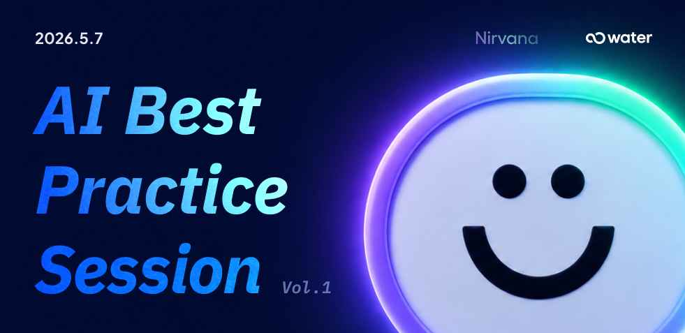
“AI와 함께 일하면,
우리의 역할은 어떻게 달라질까?” — 워터의 첫 AI Best Practice Session
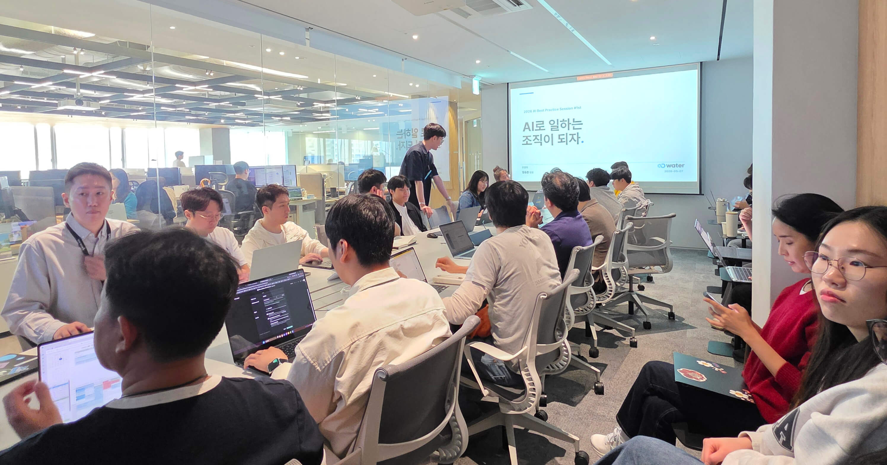
안녕하세요, 워터(Water) BXD팀입니다.
BXD(Brand Experience Design)팀은 워터가 일하는 방식, 우리만의 문화, 그리고 그 안에서 만들어지는 작은 이야기들을 사내외에 전하는 일을 맡고 있어요. 오늘 BXD팀이 직접 취재해 들고 온 이야기는 워터의 첫 번째 AI Best Practice Session입니다.
워터는 누구나 빠르고 편리하게 전기차를 충전할 수 있는 인프라를 만들고 있습니다. 그런데 요즘 저희가 충전하는 것은 비단 전기차만이 아닙니다. 워터 크루들의 번뜩이는 아이디어, 일하는 방식, 그리고 동료들의 가능성까지 함께 충전하고 있습니다.
그날 우리가 모인 자리는 단순히 "요즘 이런 AI 툴이 핫하대요"라고 소개하는 시간이 아니었습니다. "AI와 함께 일하면 우리의 역할은 어떻게 달라질까?"라는 본질적인 질문을 던지고, 각 팀이 현업에서 치열하게 실험해 온 생생한 기록을 나누는 공유의 장이었습니다.
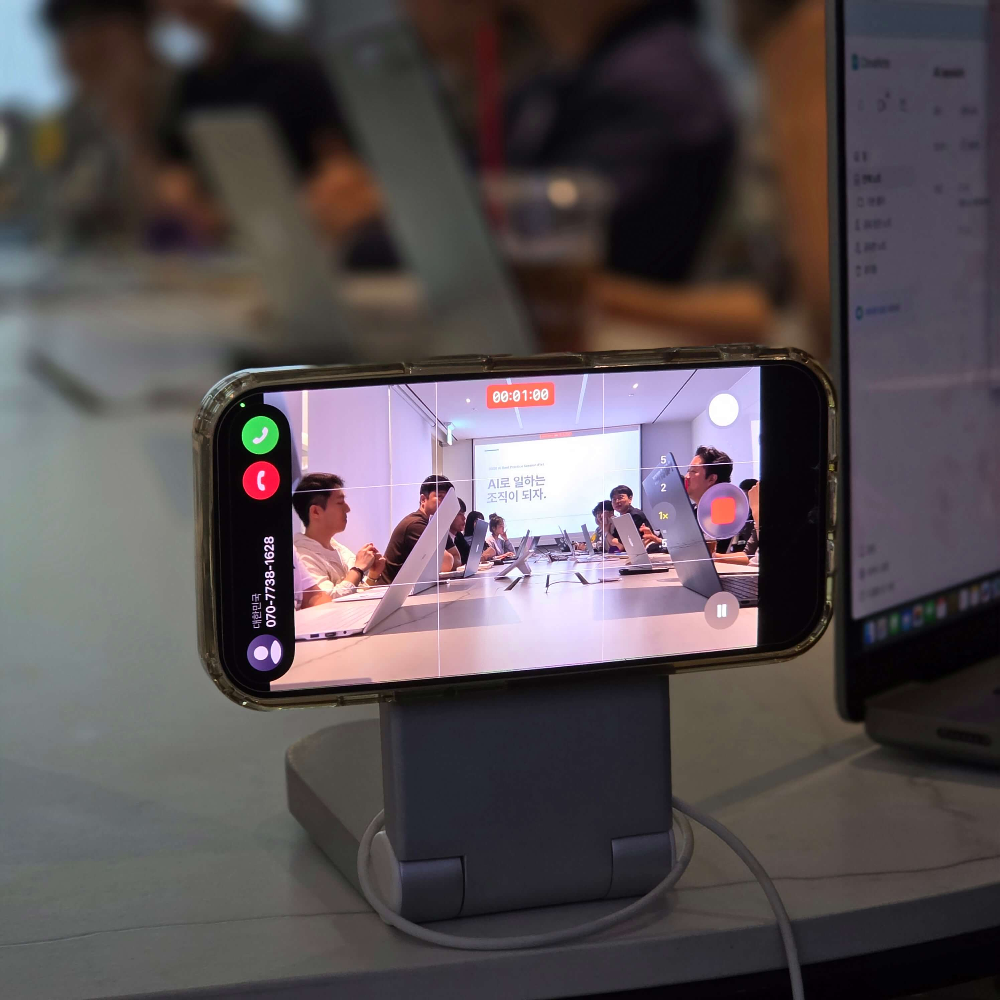
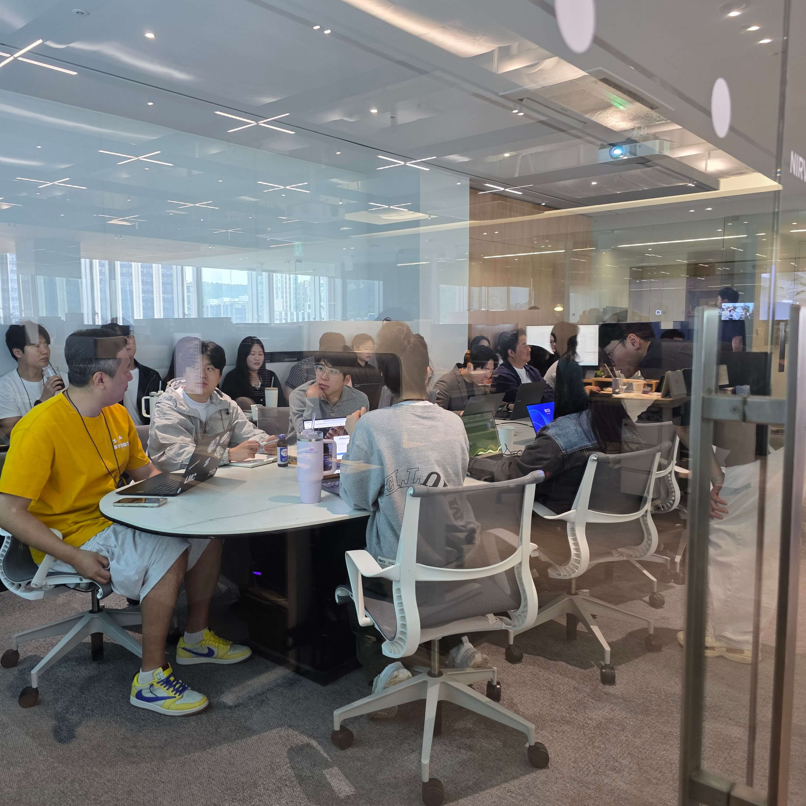
당근의 해커톤이나 오늘의집의 기술 공유 문화처럼, 워터 크루들 역시 성장에 대한 열정으로 가득합니다. 워터가 AI를 어떻게 업무에 녹여내고 있는지, 열기 가득했던 현장 인사이트를 공개합니다.
Recognition Culture
공유한 사람에게 박수가 돌아가는 구조
총상금 월간 Best Practice Team 동료 투표 + 대표 평가
리워드 Individual Speaker 자발적 실험과 공유 자체를 인정
Individual 2개의 성장 트랙 조직의 변화와 개인의 탐구가 함께
Awards 연말 시상 대표's Choice + Everyone's Choice
400 AI Agent 조직 확장 사람 수가 아니라 능력의 규모를 확장
조직 툴 사용을 넘어선 문화 변화 AI를 쓰는 사람이 아닌 AI로 일하는 조직

01세션은 어떻게 설계됐을까
이번 세션은 단순한 발표 모음이 아니라, 사고방식 → 실험 → 확장의 흐름으로 설계되었습니다. 첫 시간에는 'AI를 어떻게 바라봐야 하는가'를 다루고, 이어서 실제 시스템을 만든 사례, 그리고 마지막으로 한 사람의 작은 실험까지. 이론에서 실전으로 자연스럽게 이어지는 구조였습니다.
A 트랙 · 서비스기획팀프롬프트는 '명령'이 아니라 '대화'다
"AI가 자꾸 엉뚱한 대답을 해요." 서비스기획팀의 발표는 이 문제 인식에서 시작했습니다.
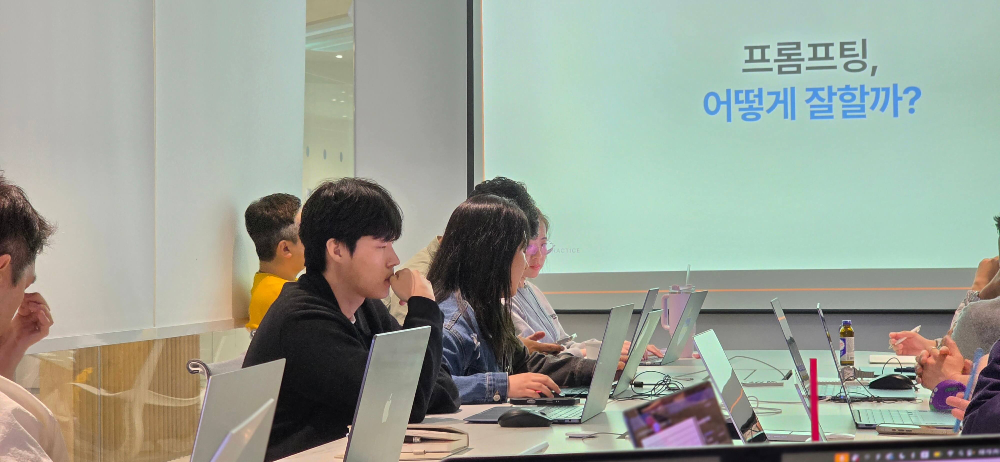
기존에는 "이런 기획서 만들어줘"라고 명령식으로 프롬프트를 작성하는 경우가 많았습니다. 하지만 일방적인 지시로는 기획자가 진짜 원하는 디테일한 결과물을 얻기 어려웠습니다. 같은 AI를 써도 사람마다 결과 품질이 천차만별이었죠.
서비스기획팀은 접근 방식을 바꿨습니다. "나는 이런 목적을 가진 서비스를 기획 중인데, 너라면 어떤 기능이 필요할 것 같아?"라고 먼저 질문을 던지기 시작했습니다. AI를 단순한 작업 도구가 아닌 '생각을 나누는 파트너'로 대우한 것이죠.
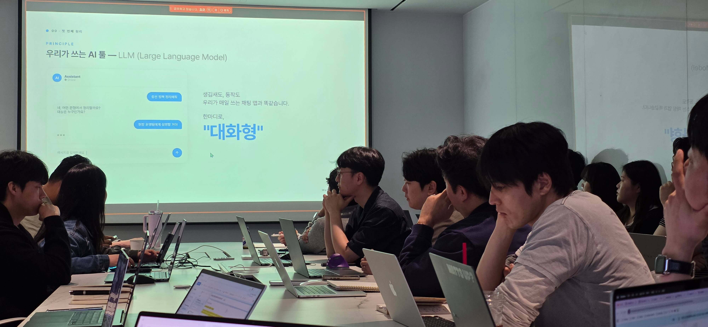
핵심 프레임 — MAKE 모드와 THINK 모드
발표에서 제시된 가장 강력한 도구는 프롬프트의 두 가지 모드를 구분하는 것이었습니다. 결과를 만드는 모드와 사고를 확장하는 모드는 입력 방식이 달라야 한다는 인사이트입니다.
- MAKE 모드 — 결과 생성: 정의된 결과물을 빠르게 뽑아낼 때. 역할·목적·형식을 명확히 지정. "기획자 역할로, 300자 이내로, 마크다운 표 형식으로."
- THINK 모드 — 사고 확장: 아이디어를 발산하고 검토할 때. 열린 질문으로 AI가 가설을 제시하게 함. "이 방향의 약점은 뭐야?", "내가 놓친 관점이 있을까?"
결과 품질을 끌어올린 세 가지 원칙
같은 모델을 써도 결과가 폭발적으로 좋아진 비결은 다음 세 가지 원칙을 일관되게 적용하는 것이었습니다.
- 역할 지정 — "너는 인프라 펀드 IR 담당자야"처럼 AI가 어떤 페르소나로 응답할지 먼저 정의.
- 목적 명확화 — 결과물의 용도를 알려준다. "투자자 미팅용 1페이지 요약", "내부 의사결정용 비교 분석" 등.
- 형식 정의 — 출력 형식을 구체적으로. "표로", "300자 이내로", "Bullet 5개로". 형식 제약이 품질을 만듭니다.
워터 표준 작업 프로세스
발표에서 공유된 워터의 AI 협업 표준 프로세스는 다음과 같습니다.
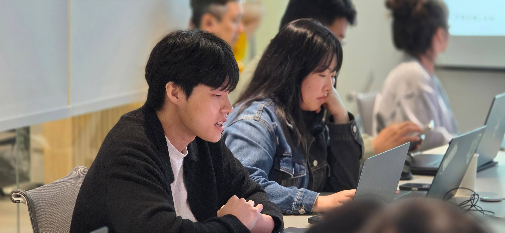
"같은 AI를 써도 결과가 다른 이유는 결국 '대화 방식'에 있습니다. AI는 명령을 기다리는 도구가 아니라, 함께 생각을 짜는 파트너입니다."
 Session Notes
Session Notes
Q. 발표 준비하면서 가장 크게 깨달은 점은요?
"프롬프트는 결국 '잘 쓴 글'이더라구요. 명확하게 못 쓰면 명확한 결과물도 안 나와요. 글쓰기 능력이 새로운 코딩 능력이 되는 것 같아요."
— 서비스기획팀B 트랙 · 운영관리팀비개발자도 직접 시스템을 만든다
코딩 한 줄 없이 충전기 AS 관리 시스템을 만들어 본 실전 사례입니다.
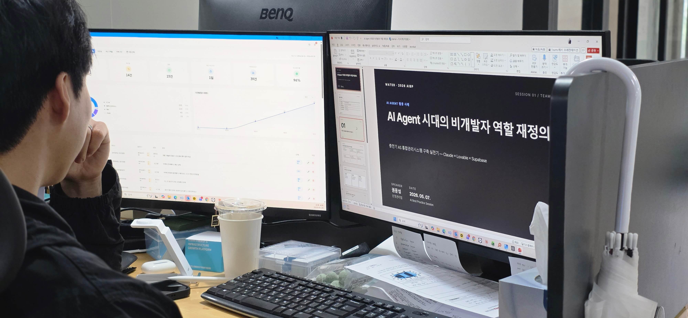
기존에는 충전기 고장 접수가 들어오면 카톡으로 현장 사진을 받고, 엑셀에 수기로 내용을 입력한 뒤, 협력사에 전화로 상황을 전달해야 했습니다. 파이썬이나 자바를 모르는 운영관리팀이지만, 이 비효율을 직접 해결하기로 했습니다.
먼저 Claude에게 "우리의 AS 업무 프로세스는 이런데, 자동화하려면 어떤 DB 스키마가 필요할까?"라고 물으며 뼈대를 잡았습니다. 그 후 Lovable이라는 노코드 UI 빌더에 프롬프트를 입력해 화면을 찍어내고, 백엔드 DB인 Supabase를 연동했습니다.
운영관리팀은 개발자의 도움 없이 운영 가능한 AS 관리 시스템을 완성했습니다. 접수, 사진 수집, 협력사 전달, 정산까지 한 흐름으로 묶여서 돌아갑니다.
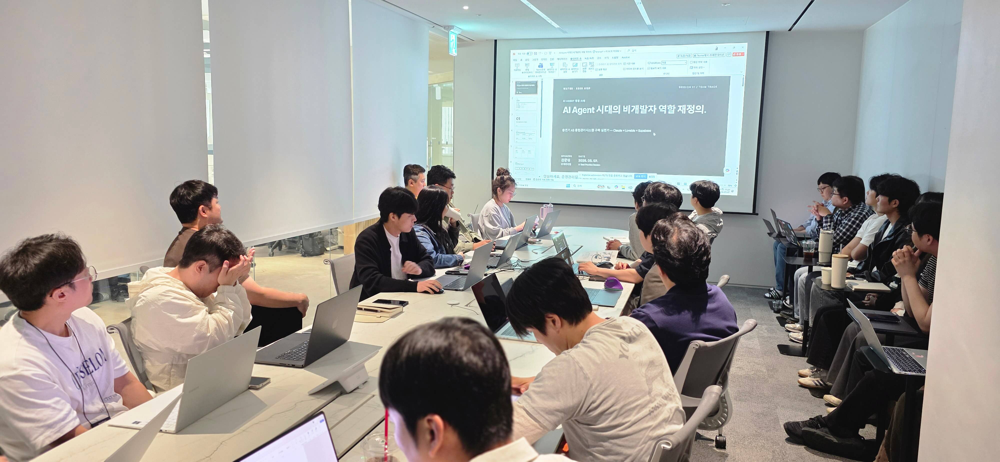
워터의 비개발자 시스템 구축 스택
이 시스템은 도구 하나로 만들어진 것이 아니라, 각각의 역할이 명확하게 분리된 4단 스택의 조합이었습니다.
DB 스키마 설계도 AI와 함께
운영관리팀이 Claude에게 던진 첫 질문 중 하나는 데이터 구조에 대한 것이었습니다. 비개발자가 처음부터 짜기 어려운 영역인데, AI가 초안을 잡아주고 사람이 수정·검증하는 흐름이 효과적이었습니다.
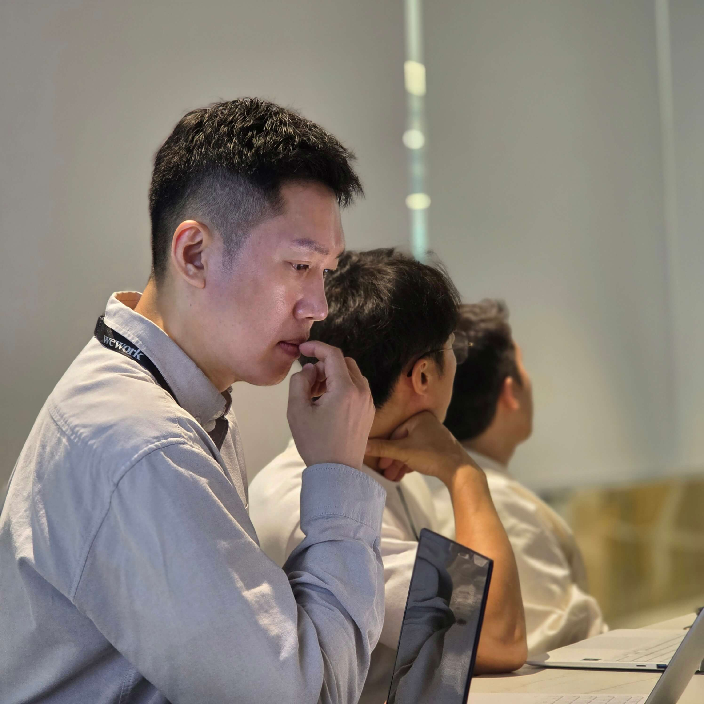
"이제는 '개발 언어를 다룰 줄 아느냐'보다 '우리의 진짜 문제가 무엇이고, 어떤 논리 흐름으로 해결할 것인지'를 정의하는 능력이 훨씬 중요합니다."
 Session Notes
Session Notes
Q. 막혔을 때 가장 큰 도움이 된 건요?
"다른 각도로 다시 물어보는 거요. 한 번 막히면 5번은 다르게 질문해봐요. 6번째에 풀린 적도 있어요. 포기하지 않는 게 진짜 중요하더라구요."
— 운영관리팀C 트랙 · 개인 발표아이디어는 작게, 결과는 진짜 서비스로
3일 만에 완성한 충전소 맛집 추천 웹앱 실험기입니다.
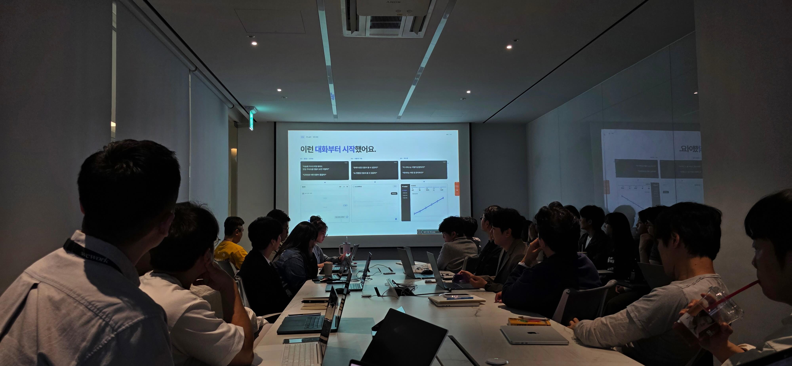
"우리 충전소 근처 맛집을 추천해 주면 어떨까?"라는 작고 가벼운 아이디어에서 출발했습니다. 예전 같으면 기획서를 쓰고, 디자이너·개발자 리소스를 조율하며 최소 한두 달은 걸렸을 만한 프로젝트였습니다.
미쉐린이 타이어를 더 많이 팔기 위해 미식 가이드북을 만들었던 사례에서 영감을 받았습니다. 충전 인프라 회사가 충전 경험 주변의 라이프스타일을 함께 상상해 볼 수 있다는 출발점입니다.
지도 → 챗봇 → 리뷰 → 관리자. AI와 대화하며 한 기능씩 쌓아 올렸습니다. 머릿속 아이디어가 눈앞의 화면으로 즉시 구현되는 경험이었습니다.
맛집 지도, AI 추천, 회원 시스템까지 갖춘 실제 작동하는 프로토타입을 단 3일 만에 완성했습니다.
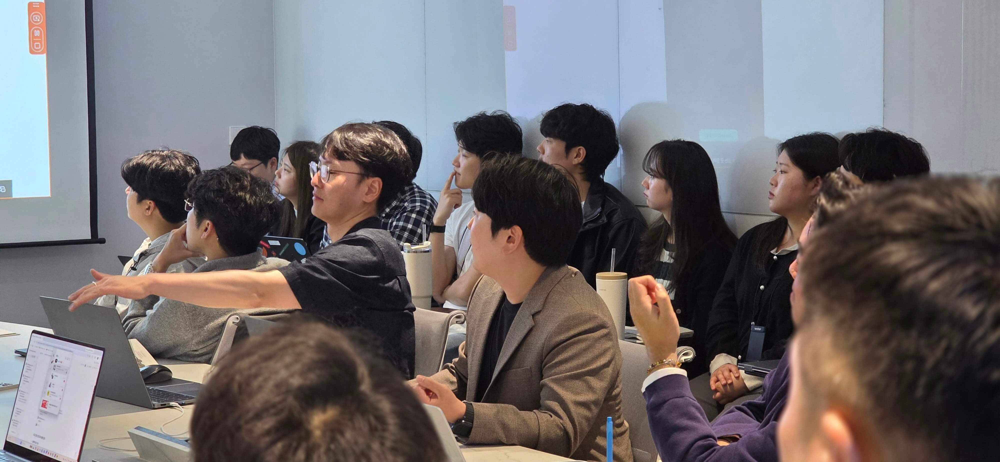
막힘을 자산으로 바꾸는 방식
실험 과정에서 부딪힌 문제들도 그냥 넘기지 않았습니다. 매번 발생한 문제를 어떻게 해결했는지 패턴화해서 다음 실험의 자산으로 만들었습니다.
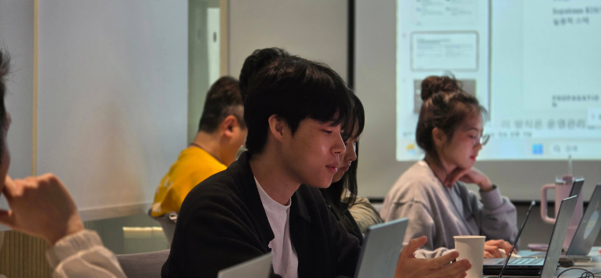
"개발을 잘하는 사람이 아니라, AI와 대화를 잘하는 사람이 만듭니다. 거창한 혁신보다 '한 번 만들어볼까?'라는 작은 시도가 AI를 만났을 때 가장 빠르게 힘을 발휘합니다."
 Session Notes
Session Notes
Q. 3일이라는 시간이 진짜 가능한 일인가요?
"막상 해보니 가장 오래 걸린 건 '뭘 만들지' 정하는 거였어요. 기획만 잡히면 만드는 건 생각보다 훨씬 빨랐어요. 의외로 가장 큰 적은 '완벽주의'였구요."
— 충전소 맛집 추천 웹앱 개인 발표자D 트랙 · Live Demo지금, 여기서, 충전합니다
이론과 사례 공유만으로 끝나지 않았습니다. 세션의 마지막은 실시간 라이브 데모였습니다. 발표자가 무대 위에서 AI와 대화하며 작은 도구 하나를 처음부터 끝까지 만들어 보여주는 시간이었습니다.
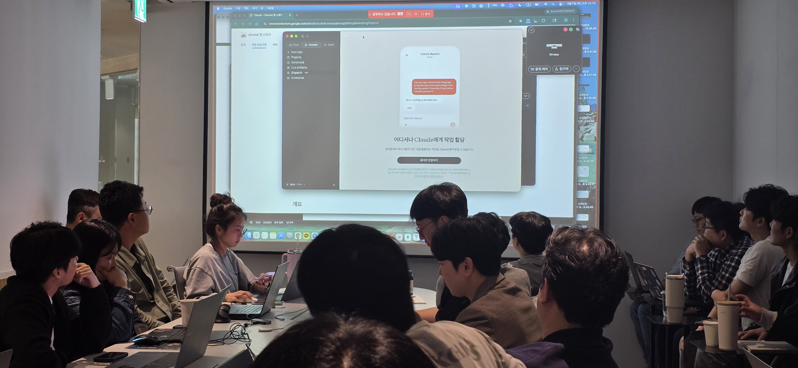
가장 인상 깊었던 것은 '완벽하게 가공된 사례'가 아니라 실시간으로 부딪히는 문제 그 자체를 함께 공유했다는 점입니다. AI가 잘못된 답을 내놓을 때 어떻게 다시 질문하는지, 코드가 동작하지 않을 때 무엇을 점검하는지 — 결과보다 과정을 그대로 보여주는 데모였습니다.
02AI 협업의 명암 — 워터가 세운 4가지 가드레일
물론 모든 과정이 마법처럼 순탄하지만은 않았습니다. 좌충우돌 실험 과정에서 얻은 뼈아픈 레슨도 세션에서 투명하게 공유되었습니다. AI와 안전하게 협업하기 위해 워터가 스스로 세운 4가지 철칙입니다.
03그래서 무엇이 달라졌을까
이러한 치열한 실험과 고민의 결과, 워터의 업무 풍경은 극적으로 변했습니다. 'AI 적용 전후' 5가지 변화입니다.
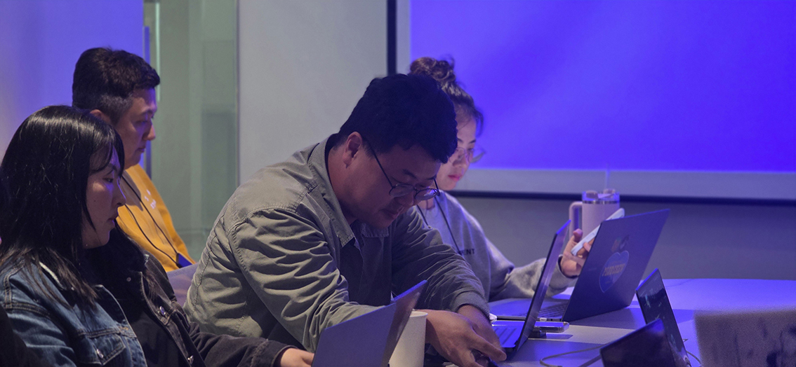
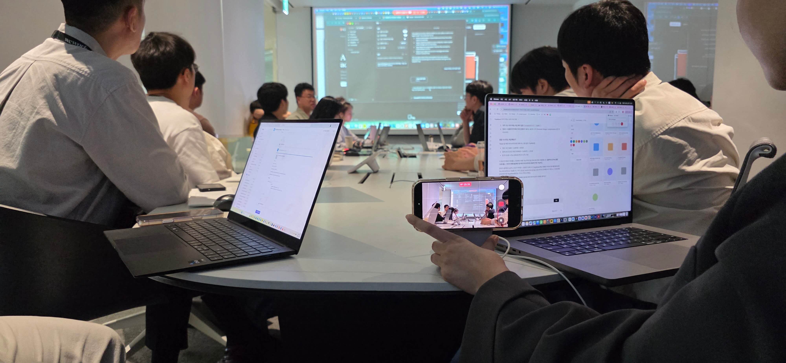
발표가 깊어질수록 고요한 집중력을 보여주는 크루들!
04전기차 회사가 왜 이렇게 AI에 진심일까
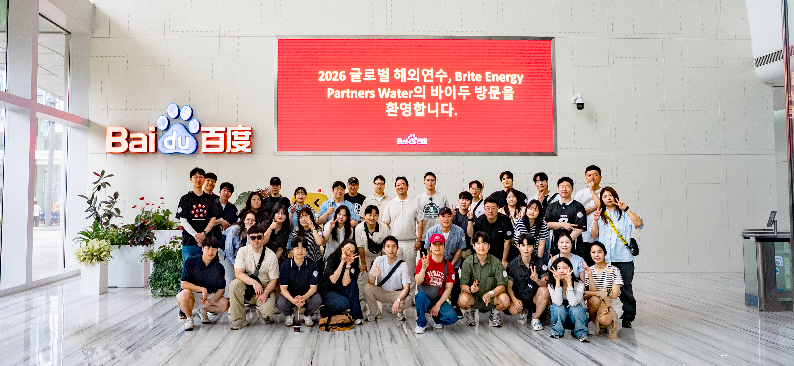
글을 읽으시면서 이런 의문이 드실 수도 있습니다. '전기차 충전기 만드는 회사에서 왜 이렇게 깊이 AI를 고민하지?'
워터가 만드는 것은 단순한 충전기 하드웨어가 아닙니다. 고객에게 더 빠르고 편리한 최상의 충전 경험을 제공하기 위해서는, 이를 뒷받침하는 우리 내부의 일하는 방식 역시 최전선에서 진화해야 하기 때문입니다.
데이터, 운영, 현장 대응, 고객 경험이 그 어느 곳보다 촘촘하게 연결된 이 산업에서 AI는 일시적인 유행이 아니라 새로운 업무 인프라 그 자체입니다.
이번 세션을 관통하는 단 하나의 문장으로 글을 맺습니다.
"AI는 우리의 일을 줄여주는 도구가 아니라, 우리가 더 좋은 일을 하게 만드는 방식이다."
오늘 공유한 기록은 워터가 어떻게 배우고, 실험하며, 성장하는지를 보여주는 작은 단면입니다. 우리의 다음 '충전'은 차량이 아닐지도 모릅니다. 또 다른 혁신적인 아이디어일 수도 있습니다. 스스로 한계를 부수고 나아가는 워터 크루들의 다음 스텝도 많이 기대해 주세요.